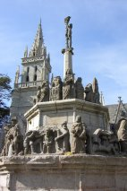
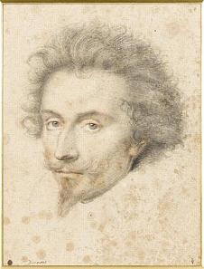
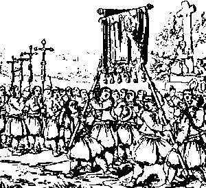
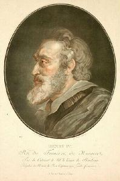
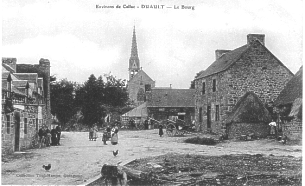

Les Ligueurs
The League
Dialecte de Cornouaille
|
Selon Luzel et Joseph Loth, cités (P. 389 de son "La Villemarqué") par Francis Gourvil qui se range à leur avis, ce chant historique ferait partie de la catégorie des chants inventés . La publication du carnet de collecte N°2 montre que ce n'est pas le cas. Des explications au sujet de ce chant , du chant du Bazhaz "Alain le Renard" et du chant du carnet 2 "L'armée caholique" sont données sur la page bretonne consacrée à la présente gwerz. |
 |
According to Luzel and Joseph Loth, quoted by Francis Gourvil (p. 389 of his "La Villemarqué"), this historical song was " invented " by its alleged collector. The publication of collection book N ° 2 shows that this is not the case. Explanations about this song, the "Alan the Fox" Barzhaz song and the Copybook N°2 song "The Royal and Catholic Army" are given on the Breton page dedicated to the present gwerz. |
Ton
Sol majeur
Rythmes 3/4 et 2/4 alternés.
| Français | English |
|---|---|
|
1. Hier soir, alors que tombait la nuit,
on entendit du bruit: Une barque qui filait sur l'eau, avec des cliquetis D'armes et des trompettes, des roulements de tambours Qui faisaient résonner les rochers sur les monts alentour! 2. Je me suis empressé d'aller voir. Pourtant je n'ai rien vu, Sinon, sur une patte, pêchant, Marguerite la Grue. - O dis-moi, Marguerite, toi qui voles loin et haut, En Basse Bretagne, qu'est-il donc arrivé de nouveau? 3. - En Basse Bretagne, rien de neuf n'est arrivé, ma foi, Si ce n'est la guerre et ses malheurs, et partout à la fois. Tous les Bretons se lèvent: gentilshommes, paysans. La guerre ne finira qu'avec l'aide du Tout-Puissant. - 4. On les vit s'assembler pour combattre aux marches du pays Sur la place de Kergrist-Moelou, dès l'aube du Jeudi De Pâques, l'arquebuse sur l'épaule, plumet droit Sabre au côté, tous vont précédés du drapeau de la foi. 5. Avant de partir ils sont allés à l'église prier, Pour de saint Pierre et du seigneur Christ ainsi prendre congé. En sortant de l'église, au cimetière à genoux, Ils crient: - Haute-Cornouaille, or ça! Tes défenseurs c'est nous! 6. C'est nous les défenseurs du pays, des défenseurs unis Pour protéger la vrai foi contre les Huguenots maudits. Et la Basse-Bretagne contre Anglais, comme Français Qui pires que l'incendie mettent à mal notre contrée. 7. En quittant le cimetière il vont en foule demander: - Avez-vous du drap rouge pour faire de nous des croisés? - Jusqu'à ce que le brave héritier de Kercourtois Repartit: - Pour être des croisés, faits donc comme moi! 8. Joignant le geste à la parole, on le vit soudain s'ouvrir Une veine du bras dont le sang aussitôt vint jaillir, Orner d'une croix rouge l'avant de son pourpoint blanc. Comme lui, voilà que tous étaient croisés, en un instant! 9. Tandis qu'on approche de Callac, tout en faisant chemin, On entend les cloches de Duault sonnant la messe au loin. Tous détournent la tête, disant d'une seule voix: - Adieu, cloches de sainte Marie, messagères de foi! 10. Adieu donc, ô cloches baptisées, ô cloches bien-aimées! Vous qu'aux jours de fêtes si souvent nous mettions à sonner! Plaise à Dieu, votre Maître, plaise à la Vierge Marie, Que vous sonniez encore une fois la guerre finie! 11. Adieu, bannières sacrées que nous avons souvent portées Autour de l'église en procession pour fêter Saint-Servais. Puissions-nous, pour défendre notre foi, notre pays, Comme pour vous tenir face au vent, avoir même énergie! 12. Que Dieu veuille secouer la gelée! Que le blé soit flétri Oui, flétri dans le champ du Français qui le Breton trahit. Chantons, gens de Bretagne, chantons d'une même voix! - "Jamais, la génisse, non jamais, au loup ne s'unira! " - 13. Ce chant fut composé, tandis que nous étions en chemin, En l'an mil cinq cent quatre-vingt douze. Retenez le bien! Un gars de la campagne fit l'air facile à chanter. Cornouaillais, il vous réjouira si vous le répétez! Traduction Christian Souchon (c) 2008 |
1. Yesterday at the close of the day,
an uproar was heard here: A vessel, that down the river made her way, was coming near With clash of arms and drum rolls and deafening flourish of horn That by the echo atop the hills for miles around were borne. 2. Now I rushed to see what was afoot, but though I looked my fill, I saw nothing but Maggie the Crane that on one leg fished still. - O Maggie, my dear Maggie, who can fly so far and high, What's new in Lower Brittany? What did you see from the sky? 3. - To Lower Brittany nothing new happened, as far I know: Still are war and trouble, everywhere sowing alarm and woe. All noblemen and country folks of Brittany did rise. This war, it shall never end, before Almighty God decides. 4. To fight on Brittany's borderline, Brittany's men have come To Kergrist-Moelou market square, when past White Thursday dawned, Each with harquebus and sword, with a red plume on his cap. Ahead of all the banner of Faith that in the strong wind flapped. 5. Before they left, they entered the church, once more, to say goodbye To both the patron saints of the town, Saint Peter and the Christ. When this devotion was made, in churchyard they all knelt down: - Defenders of Upper- Cornouaille, are all gathered in this town!" 6. Here are united soldiers who shall Brittany well defend, Defend true Faith against Hughenots and with their friends contend. Brittany they shall defend against the Saxons and French Both are worse still than fire in the land that flat and bare they swept. - 7. They left the churchyard, many of them asking: - Where could we find Red cloth that would on our doublets of the crusade cross remind? The brave Kercourtois heir cried: - Now, as a model take me, I promise it to the lot of you: Crusaders you will be! - 8. He had not yet finished with his speech, when his sleeve he had hitched, Had opened up a vein and red blood was gushing forth from it, Adorned his white doublet with a red cross in the front. Instantly all of them wore a cross, no one the pain had shunned. 9. On their way to the border they came near Callac, the next town, When they perceived the bells of Duault that for high mass were rung, They all turned back their heads and cried unison: - Farewell, Farewell, ye bells of Saint Mary Church, farewell, our beloved bells! 10. O Farewell, farewell, hallowed friends! Ye, dedicated bells, That we have rung on so many feast, our dear old friends, farewell! May it please to the Lord , and to Saint Mary, too, That, when the war has come to an end, we may again ring you! 11. Farewell, ye hallowed banners, too, that we carried so oft, In procession around the church on Saint Servais' day, aloft! May we with the same strength our land and our faith protect As against the fury of the wind we held our flags erect. 12. May God, the Lord, shake off the frost! May wither wheat and fade, May wheat fade in the field of the French: The Bretons they betrayed! O let us sing forever, and in choir, let us sing: - " O never, shall the heifer consent to the wolf to be kin!" - 13. This song was made, as we were on our way, for all of you, In the year of grace fifteen hun- dred and ninety two, A young labourer made it to a tune easy to sing. Repeat it, men of Cornouaille all! Everywhere let it ring! Translated by Christian Souchon (c) 2008 |
Texte du Carnet 2, pp 193-194
| Brezhonek | Français | English |
|---|---|---|
|
1. Tro mare 'guzhe an heol 'dreñ ar menez neizhour, Trouz ur vag a oa klevet ' tont en traoñ gant an dour. Klevet son an drompilhoù hag an taboulinoù Ken a zone ar c'herreg e kreiz ar menezioù. 2. Ha me da vonet da welet, met na weliz netra, Nemet Katell-ar-Gerc'heiz a oa o pesketañ. - Kerc'heiz, O kerc'heizig, te nij huel ha pell: Petra nevez zo degouet, e-barzh a Vreizh-Izel? 3. - Netra nevez zo degouet e-barzh a Vreizh-Iizel, Nemet, e tri c’horn ar vro, strafuilh bras ha brezel. Savet, an holl Vretoned, peizanted ha noblañs. Ha na vo fin d’ar brezel, ma na gav an dud chañs. [1] - ... 11. - Kenavo, bannieloù sakr hag ez-eomp-ni douget, O tont en-dro d’an iliz d'ar pardon St Servet! Ra vimp ken gouest d'ho tifenn ha difenn ar gwir Feiz Hag ez omp-ni bet d’ho terc’hel, war an dachenn en deiz! 11 D. Na, red a vo deomp-ni bremañ dougen ur banniel all A zo deuet gant ar poultr ha moged an tan-gwall. Ne vo ken gant brec'hioù deomp-ni d’eñ soutenn, Nemet gant beg ar fuzuilh vat, ha gant beg ar sabrenn. 7. Hag o tont d'eus an iliz Gweltas int a lavare : - Men a gavfemp mezher ruz, d'en-em groazañ breme? - Ken a respontas buhan Paotr maner Kergortez: - Kemerit skouer diganin hag e vec’h kraozet aes! - 8. Ne oa ket e gomz gantañ, c'hoazh achuet mat, Pa doullas gwazhienn e vrec’h, ken a strinkas ar gwad. Ha war dal e borpant gwenn ur groaz ruz en-deus graet, Hag a-barzh ne-meur amzer o holl a oant kroazet! - (4-5.) Ar Vretoned a weliz o vediñ er park hir: Ne ra gant filzier strob, nemet gant klezier dir. Kennebeut gwinizh ar vro, keneubeut hor segal, Nemet Pennou-boull Bro-Saoz ha Bro-Spagn ha Bro-C’hall, (6-7) Ar Vretoned a weliz o vas el leur a foul, Ken a lamme ‘r pellennoù dimeus ar pennoù boull, Ha neket gant freilhoù prenn a vas ar Vretoned, Nemet gant mailhoù houarnet ha gant treid ar roñsed. (8-9) Ar youc'hadenn a gleviz, youc'hadenn ar peur-zorn. Adalek menezoù Laz, [2] tre betek traoñ Elorn Adalek Penn zant Weltaz, tre betek Penn-ar-Bed. E pevar korn Breizh Izel, ra vo Doue meulet! 13. E pevar korn Breizh Izel, ra vo Doue meulet! Ar ganenn-mañ zo savet abaoe 'maomp en hent. |
1. Vers l'heure où le soleil se couchait derrière la montagne, hier On entendit du bruit venant d'un navire descendant la rivière: On entendit des trompettes et des tambours Dont résonnaient les rochers parmi les montagnes. 2. Et moi d'aller voir, mais je n'ai rien vu d'autre, Que Catherine la Cigogne en train de pêcher. - Cigogne, O mon amie, toi qui voles haut et loin Qu'est-il arrivé de nouveau en Basse-Bretagne? 3. - Il n'est rien arrivé de nouveau en Basse-Bretagne, Si ce n'est, aux quatre coins du pays, grand désordre et guerre. Tous les Bretons se sont soulevés, paysans et noblesse. Et la guerre n'aura de fin, si la chance ne sourit aux hommes. - [1] ... 11. - Adieu, bannières saintes que nous avons portées, Tout autour de l'église, lors du pardon de Saint-Servet! Puissions-nous être aussi à même de défendre la vraie foi Que nous l'avons été de vous brandir au grand jour sur la place! 11 D. Il nous faudra désormais porter une autre bannière Venue avec la poudre et la fumée des incendies. Non pas à bout de bras, Mais au bout d'un bon fusil, mais au bout de nos sabres. 7. Et en revenant de l'église Saint-Gildas ils disaient: - Où trouverons-nous du tissu rouge pour, à présent, nous croiser? - Le seigneur du manoir de Kercourtois répondit aussitôt: - Prenez exemple sur moi et vous serez facilement croisés! - 8. Et il joignit le geste à la parole: En perçant une veine de son bras, il en fit jaillir du sang. Et sur le devant de son pourpoint blanc une croix rouge il a tracée Et en peu de temps, tous ils étaient croisés! - (4-5.) Les Bretons je les ai vus qui moissonnaient dans le grand champ: - Non pas avec des faux ébréchées, mais des épées d'acier- Non pas le froment du pays, non pas notre seigle, Mais les Têtes-rondes d'Angleterre, d'Espagne et de France, ... (6-7) Les Bretons je les ai vus qui frappaient l'aire foulée Faisant jaillir la balle des (épis) Têtes-en-boules: Ce n'était pas avec des fléaux de bois qu'ils frappaient, ces Bretons, Mais avec des maillets ferrés et les sabots de leurs montures. (8-9) Puis j'entendis l'ovation saluant la fin du battage Retentir jusqu'aux monts de Laz, [2] au-delà du val de l'Elorn, Jusqu'à la pointe Saint-Gildas, au delà du cap Finisterre. Qu'aux quatre coins de la Basse-Bretagne, Dieu soit acclamé! 13. Qu'aux quatre coins de la Basse-Bretagne, Dieu soit acclamé! Nous avons composé ce chant, alors que nous marchions. [1] Cf. la str. 1 de Komañset eo ar brezel , un chant de Chouans, qui présente beaucoup de similitudes avec la présente gwerz. L'Abbé Cadic a noté "Ha na echuo james, mar na gaR an dud chañJ" (cela ne finira jamais si les hommes refusent de changer). La Villemarqué a écrit comme ici "mar na gaV an dud chañS" qu'il traduit dans le Barzhaz de 1867, p. 282: "si Dieu ne vient en aide aux hommes" (mot à mot: si les gens ne rencontrent pas la chance) [2] Cf. la str. 7 de An alarc'h , qui pourrait aussi être un chant de Chouans ": "Ken a zon ar menezioù Laz" que La Villemarqué traduit (p. 230) "Les montagnes du Laz résonnent". S'agit-il de chants historiques anciens recyclés par les bardes chouans? |
1. About sunset yesterday night behind the hills Noise was heard from a ship sailing down the river: Trumpets and drums were heard Echoed by the mountain rocks. 2. I decided to go and see, but I saw nothing But Catty the Stork that was a-fishing. - Stork, my friend, you fly high and far. Tell me What happened in Lower Brittany of late? 3. - Nothing new happened in Lower Brittany, All everywhere in the country, great disorder and war. But now the Bretons rose up, peasants and nobility. To wage a war that won't end unless fates decide otherwise. - (1] ... 11. - Farewell, ye holy banners that we carried, All around the church, on the Pardon feast of Saint-Servet! May we defend the true Faith with the same strength As when we brandished you in broad daylight on the churchsquare! 11 D. We have got now to carry another banner That came surrounded with reek of gunpowder and burning houses. Not to be born at arm's length, But on the tip of a good gun or the point of our sabers. 7. Coming back from Saint-Gildas church they said: - Where will we find red fabric to dress like crusaders? - The lord of Kercourtois manor immediately replied: - Take my example and you will easily be crusaders! - 8. Now he walked the talk: By piercing a vein in his arm, he made blood gush out of it. And over the front of his white doublet he drew a red cross. And in no time, all of them were crusaders! - (4-5.) The Bretons I saw as they were harvesting in a large field: - Not with blunt scythes, but sharp steel swords - Not wheat from our fields, not our rye, But Roundheads from England, Spain and France, ... (6-7) The Bretons I saw hitting the threshing floor, Making the chaff spring off the Roundheads' ears: Not with wooden flails did the Bretons thresh, But with iron hammers and with their horses' hooves. (8-9) Then I heard the cheer greeting the threshing's end Resound as far as the Laz mountains, [2] far beyond the Elorn dale, As far as Saint-Gildas Point, beyond Cape Finisterre. May God be acclaimed to the four corners of Lower Brittany! 13. May God be acclaimed to the four corners of Lower Brittany! We made this song as we were marching on the road. [1] Cf. st. 1 of Komañset eo ar brezel , a Chouan song, which has many similarities with the present gwerz. Rev. Cadic noted "Ha na echuo james, mar na gaR an dud chañJ "(this will never end if men refuse to change). La Villemarqué wrote as he does here: "mar na gaV an dud chañS "which he translates in the Barzhaz of 1867, p. 282:" if God does not help men "(word for word: if people don't have the chance) [2] Cf. str. 7 of An alarc'h , which could also be a song of Chouans: " Ken a zon ar menezioù Laz " which La Villemarqué translates (p. 230) " The Laz mountains resound ". Are these ancient historical songs recycled by the Chouan bards? |
Cliquer ici pour lire les textes bretons (versions imprimée et manuscrite).
For Breton texts (printed and ms), click here.

|
Résumé
Lorsque fut signé, en 1499, le traité d'Union perpétuelle de la Bretagne à la France , par le roi Louis XII, la veille de son mariage avec Anne de Bretagne, le peuple armoricain, fatigué d'une guerre sans fin, consentit à accepter le roi pour seigneur direct, après avoir été gouverné par des ducs qui ne pouvaient ni promulguer, ni abroger aucune loi sans l'approbation du baronnage de Bretagne. Certains cependant, conduits par le Duc de Mercoeur , embrassèrent, lors de la Ligue , la cause du parti catholique, en vue de secouer le joug étranger. Le présent chant est le chant de départ des ligueurs cornouaillais pour le siège de Craon (Mayenne) défendue par 8000 hommes, tant Anglais que Français, qui furent mis en déroute en mai 1592. Partis de Kergrist-Moélou (à 20 Km à l'ouest de Carhaix) et suivant l'exemple de Kercourtois , ils se peignent une croix rouge avec leur sang sur leur pourpoint blanc, tels de nouveaux croisés. Ils font leurs adieux à leurs bannières, aux cris de "Que Dieu secoue la gelée (de nos récoltes)!", "Que le blé soit flétri dans le champ du Français!" et "Jamais la génisse -la Bretagne-, ne s'alliera au loup -la France-" ("Da hejo Doue ar reo!","Da vo goenvet an ed e douar ar Gall!","Biken n'embaro an ounner gant ar bleizh!"). L'enlèvement de la bannière de Saint-Servais aux cris de "Hej ar reo!" est un usage qui s'est maintenu jusqu'au XIXème siècle. Cette tradition fait l'objet d'une note, p. 229 du le carnet N°2 , reproduite, avec des modifications, p. 285 du Barzhaz de 1867. On affiche le texte original de cette note en cliquant la case "+", en bas de la colonne "commentaires" sur La page bretonne de ce chant . La Ligue en Bretagne En 1558 la religion réformée fut introduite en Bretagne par le propre frère de l'Amiral de Coligny, Dandelot qui reçut l'appui de la soeur d'Henri de Navarre, la Vicomtesse de Rohan. L'exemple donné par ces deux personnalités, l'intolérance des catholiques et les persécutions vinrent renforcer les rangs des calvinistes, de sorte qu'en 1569 on comptait déjà 28 temples en Bretagne qui, de ce fait, connut les mêmes atrocités que le reste de la France. C'est cependant l'honneur de la nouvelle province de ne pas avoir organisé de Saint Barthélémy (24 août 1572) dans ses villes comme le Duc de Bourbon-Monpensier, Gouverneur de Nantes, projetait de le faire, n'eût été la résistance du sénéchal Duplessis-Querré et du Maire Michel Le Loup du Breuil.  La Ligue de Bretagne se constitua sous le règne de Henri III à l'initiative du Duc de Mercoeur. L'épouse de celui-ci descendait des deux anciennes maisons ducales Penthièvre et Blois et il hésitait sous les Valois, ses bienfaiteurs, à se poser en héritier de la couronne ducale, d'autant que le peuple ne l'aurait pas suivi. L'extinction de la branche des Valois à la mort de Henri III et l'accession au trône du fils protestant de Jeanne d'Albret, Henri de Navarre, lui fournirent les motifs pour soulever les Bretons qui accoururent en foules se ranger sous sa bannière, tandis qu'il convoquait de sa propre autorité "son" parlement à Nantes et nommait son fils nouveau-né "Prince de Bretagne".Il reçut l'appui de Philippe d'Espagne, qui, malgré ses propres prétentions à la couronne ducale, envoya des renforts qui se comportèrent aussitôt en pays conquis. La prise du bourg de Loipéran où les Espagnols furent empêchés de débarquer par les habitants restés fidèles au roi fut suivie du massacre de tous les habitants. C'est là que plus tard Richelieu fera construire une petite forteresse Port-Louis qui précéda la création de la ville de Lorient. Même après qu'Henri de Navarre, devenu Henri IV, eut considéré que "Paris valait bien une messe", les Bretons restaient méfiants envers l'instigateur de l'Edit de Nantes (13 avril 1598) qui accordait aux protestants la liberté de pratiquer leur religion. Quant à Mercoeur, il n'avait aucune envie d'abandonner ses ambitions, tandis que les autres chefs nobles de la Ligue tiraient, en s'en prenant à la fois aux royalistes et aux catholiques, tellement parti de ce conflit qu'ils n'avaient aucun intérêt à y mettre fin. On sait que le roi Henri eut la chance et la grandeur d'âme, et son ministre Sully la sagesse, de mener à bien la pacification de la Bretagne en faisant preuve d'humanité et de retenue. Le présent chant illustre tout à fait le fanatisme du peuple des campagnes, bien que le barde s'efforce d'en adoucir les traits. Le jeune Kercourtois était l'un des ligueurs les plus fanatiques. On affirme qu'il "remplissait son devoir de bon chrétien, jeûnant les carêmes, même à la campagne". Voilà qui nous rappelle un des héros de la Combat des Trente" . Duault et le Pardon de Saint-Servais  Voici la description qu'en donne le géographe Jean Ogée (1728 - 1789), vers 1780:" Albert [Le Grand] de Morlaix et quelques autres disent que Duault est une des plus anciennes paroisses de Bretagne. Saint Hernin, qui vint s'y établir en 532, reçut du seigneur de Quélin [Quélen] un petit terrain situé auprès de l'ancienne ville de Keralus. Ce saint y bâtit un monastère, dans lequel il vécut jusqu'en 540, année de sa mort. On éleva dans la suite, sur son tombeau, l'église de Locarn, qui forme aujourd'hui une trêve de Duault-Quélin. La chapelle de Saint-Servais, sise à trois quarts de lieue de ce bourg, et dans son territoire, est très renommée dans le pays, surtout par une assemblée qui s'y tient tous les ans, le 13 de mai, et où il se trouve plus de dix mille personnes, particulièrement de l'évêché de Vannes, qui font ce voyage pour demander une récolte abondante . Les femmes, en entrant dans cette chapelle, ôtent leurs coiffes et les mettent au bout de leurs bâtons , pour les faire toucher à la figure du saint, qu'elles prient à haute voix de leur accorder du bon blé-noir, de la bonne avoine et autres grains. Les hommes en disent autant; et, après la cérémonie, ils entrent dans la sacristie, où ils achètent du marguillier la bannière processionnelle, qu'ils paient argent comptant, et avec laquelle ils forcent le prêtre de faire une procession autour de la chapelle, auprès de laquelle est un petit ruisseau qui sépare cet évêché d'avec celui de Vannes. Les habitants de l'évêché de Quimper, pour empêcher qu'elle ne passe de l'autre côté et ne tombe par là dans la possession des Vannetais, attendent la procession dans cet endroit, où la bannière est mise en pièces par tous les assistants, qui s'efforcent d'en avoir chacun un petit morceau. Ceux qui ne peuvent en approcher tiennent leurs bâtons en l'air, et demandent, par des cris horribles, une bonne récolte. Pour empêcher le désordre, on a soin de commettre environ deux cents hommes pour y mettre la police; mais, pour l'ordinaire, cette troupe, trop peu nombreuse, est repoussée et vaincue par le grand nombre des combattants. En 1766 . l'évoque de Quimper défendit au recteur de Duault d'ouvrir la chapelle de Saint-Servais le jour de l'assemblée dont on vient de parler. Le prêtre voulut obéir à ses ordres; mais les Vannetais se rendirent à la cure, se saisirent du curé, le mirent sur leurs bâtons, avec lesquels ils avaient formé une espèce de brancard, et le portèrent jusqu'à la chapelle, dont ils brisèrent les portes, et le forcèrent de célébrer l'office divin comme par le passé. La thèse de Francis Gourvil Dans son "La Villemarqué...", Francis Gourvil consacre un long chapitre (pp. 404 à 484) aux "sources populaires du Barzhaz Breizh". Il considère tous les chants qu'il y examine, non pas comme rendant compte de l'authentique tradition orale, mais comme en étant "démarqués". C'est une catégorie à laquelle "Les Ligueurs", selon lui, n'appartient pas. Ce morceau serait tout au plus inspiré par un chant qu'on peut supposer contemporain de la conquête de l'Algérie (1830) (du fait que les deux dernières strophes déplorent qu'"il n'y a point de prêtres là où [les jeunes gens] s'en vont") et que l'Abbé Guillerm a collecté et publié en 1905 sous le titre "Le départ de deux jeunes soldats" dans ses "Chants populaires bretons du Pays de Cornouaille" (pp. 143-147). On y lit: 5. Et les deux garçons disaient, laissant le village derrière eux: "O Sainte Marie et vous, saint Pierre, adieu! 6. Combien de fois ai-je porté la grande bannière de l'église, Que ce soit à la messe ou aux vêpres. 7. Aux vêpres je l'ai portée, à la grand' messe pareillement, Et l'an passé, le jour du Saint-Sacrement... 10. Puis l'on entendit sur la grand-route à hauteur du Menez-Roué, Les cloches sonner pour la messe à Tréguier. On voit donc des jeunes gens faisant leurs adieux aux églises, aux bannières et aux cloches de leur pays natal et l'on peut, à la rigueur, rapprocher ces passages des strophes 9 à 11 du présent chant, soit 3 strophes sur les 13 que compte le morceau. Gourvil suppose que La Villemarqué avait eu connaissance de ce "Chant du départ" qui, selon lui, avait été composé, au plus tôt, quinze ans auparavant, lorsqu'il prépara en 1842-1844 la seconde édition de son recueil. Comme pour presque tous les autres chants de 1845, rien dans le premier manuscrit de Keransquer ne vient confirmer cette hypothèse. Tout au plus y trouve-t-on, page 63, écrites au crayon et repassés à l'encre, trois strophes relatives aux cloches du village natal, reprises avec quelques changements mineurs dans le chant (de 1839) Baron de Jauioz : 17 N'était encore allée bien loin, Que retentissait le tocsin. 18. Ce son bouleversa son âme: - Adieu, l'église de Sainte Anne; 19. Adieu, cloches de ma patrie, Cloches qui fûtes mes amies! Bref, pour être acceptée sans hésitation, la thèse de Gourvil nécessiterait d'être étayée par des éléments nouveaux. Depuis la publication du Carnet de collecte N°2 en novembre 2018, un autre système explicatif semble plus plausible. Il est exposé sur lla page bretonne correspondant au présent chant.
|
Résumé
When, in 1499, the treaty of Perpetual Union of Brittany to France was signed by King Louis XII, on the eve of his marriage to Anne of Brittany, the Breton people, who were tired of an endless war, consented to admit the King of France as their immediate Lord, after being ruled for centuries on end by Dukes who could neither pass nor abrogate any law without the Barons of Brittany approving it. Some of them however, led by the Duke de Mercoeur , joined, when the rebellion known as "The League" broke out, the Catholic party, with a view to shake off the alien yoke. The present song was sung by the leaguers of Cornouaille (surrounding Quimper) when they left to besiege Craon (Mayenne), a town defended by 8000 soldiers from England and France, who were routed in May 1592. They gathered in Kergrist-Moélou (20 Km west of Carhaix) where, following the example of Lord Kercourtois , they painted a red cross with their blood on their white doublets, new crusaders alike. They said their farewells to their banners, crying "May God shake the frost off (our crop)!", "May wheat whither in the field of the French!" and "Never shall the heifer -Brittany- unite with the wolf - France -" ("Da hejo Doue ar reo!","Da vo goenvet an ed e douar ar Gall!","Biken n'embaro an ounner gant ar bleizh!"). The ancient custom of raising Saint Servais' banner to the cries of "Hej ar reo!" is an usage that was maintained until the XIXth century. This tradition is addressed in a note, p. 229 of copybook N ° 2, copied, with some changes, on p. 285 of the 1867 Barzhaz. The original text of this note is displayed by clicking the "+" sign at the bottom of the "Comments" column on the Breton page of this song The League in Brittany In 1558 the reformed religion was introduced in Brittany by the brother of Admiral de Coligny, Dandelot, who enjoyed the backing of Henry of Navarre's sister, the Viscountess of Rohan. The example set by these prominent persons, the Catholics' intolerance and the persecutions they perpetrated swelled the ranks of the Calvinists, so that in 1569 there were already 28 Protestant churches in Brittany, where therefore the same atrocities took place as in the rest of France. However it is a point in favour of the new province that no massacres of St. Bartholomew's Day (24th August 1572) happened in its towns, though they were schemed by the Duke de Bourbon-Monpensier, the Governor of Nantes, due to the resistance of Seneschal Duplessis-Querré and the Lord mayor Michel Le Loup du Breuil.  The Breton League was constituted in the reign of Henry the Third, on the Duke de Mercoeur's initiative. His wife was descended from both Ducal houses Penthièvre and Blois, but he refrained, as long the Valois, his benefactors, were on the throne, from setting forth his pretensions to the Ducal crown, knowing that the people would not have furthered his cause. The dying out of the Valois branch, when Henry the Third died and his replacement on the throne by the Protestant son of Jeanne d'Albret, Henry of Navarre , provided him with sufficient motives for stirring up the Bretons who hurried in crowds to serve with his colours, while on his own authority he summoned the Breton Parliament in Nantes that they might acknowledge his newborn son, the "Prince of Brittany".He enjoyed the support of King Philip of Spain, who in spite of his own claims to the Ducal crown, sent him reinforcements who at once began to act all high and mighty. The seizure of the market town Loipéran where the Spaniards were kept from landing by the inhabitants who had remained loyal to the king, resulted in the slaughter of all of them. This is the place where Cardinal Richelieu was to erect later on a small fortress, Port-Louis, followed by the creation of the town Lorient. Even after Henry of Navarre, who had become King Henry the Fourth, had considered that "Paris was well worth a Mass", the Bretons were still distrustful of him, as he had initiated the Edict of Nantes (13th April 1598) that granted Protestants freedom of religion. As for Mercoeur, he was not in a mood of giving up his schemes, while the other noble chieftains of the League, who plundered without distinction Royalists and Catholics, did not feel prompted to ending a conflict they found so profitable. It is well known that king Henry, as a result of his own luck and high-mindedness and of his minister Sully's clear-sightedness, was able to pacify Brittany with humanity and restraint. The present ballad highlights the fanaticism of the country folks, though the bard endeavours to tone it down. Young Kercourtois was one of the most frenetic leaguers. They say he would "fiulfil his duties in Lent as a good Christian, fasting even during the campaigns". This should ring a bell and remind us of the hero of The Combat of the Thirty . Duault and the Pardon of Saint-Servais  Here is the description of the Pardon made in 1780 by the geographer Jean Ogée (1728 - 1789):" Albert [Le Grand] of Morlaix and some other authors assert that Duault is one of the oldest parishes of Brittany. Saint Hernin settled there in 532 and was granted by the lord of Quélin (Quélen) a small estate next to the old town Keralus. The holy man erected there a monastery were he lived and died in 540. Later on, the church of Locarn was built over his grave - Locarn being a neighbourhood part of Duault-Quélin. The Saint-Servais chapel, located tree-fourth of mile away from this borough and its surroundings are renowned in the country, above all for the yearly Pardon, on the 13th of May, where over ten thousand people gather peculiarly from the bishopric Vannes who come to ask for bumper crops . Women on entering this chapel take off their headdresses and hang them at the tip of a stick to make them sweep the face of the saint's statue whom they loudly pray he might grant them a good crop of buckwheat, of oats or of other cereal. The men imitate them, and after the ceremony, they enter the sacristy, where they buy from the churchwarden the procession banner, which they pay in cash. They then force the vicar to go in procession around the chapel that stands next to a small river which separates the country from the bishopric Vannes. People of the bishopric Quimper, to prevent it from being diverted by the other side and becoming the Vannes people's property, wait for the procession to come to this place where the banner is torn to shreds by all and everybody endeavours to get a tiny shred of his own. Those who cannot get near hold their staffs in the air and entreat of God with horrible cries a good crop. To prevent brawls, about two hundred men of the force are engaged but are usually held in check and overpowered by the innumerable mob. In 1766, the bishop of Quimper ordered the vicar of Duault to keep Saint Servais chapel closed on the aforesaid Pardon day. The priest tried to obey, but Vannes people entered the vicar's house, seized him and heaved him up on a sort of stretcher made up of their staffs, and carried him to the chapel, broke open the door, and forced him to celebrate the holy service as required by a centuries-old custom. Views of Francis Gourvil on this song In his "La Villemarqué...", Francis Gourvil dedicates a long chapter (pp. 404 with 484) to the "Folklore sources of the Barzhaz Breizh". He considers all the songs investigated, not as reliable records of genuine oral lore, but as "artefacts based on it". Into this category "The League", in his opinion, does not even belong. If need be the piece at hand could be considered inspired by a ditty very likely contemporary with the conquest of Algeria (1830) , on account of the last two stanzas in which the bard deplores that "there are no priests there where [the young men] are going"). The Reverend Guillerm collected and published that piece in 1905 under the title "Farewell of two young conscripts" in his "Breton folk songs of Cornouaille" (pp. 143-147). It contains the stanzas: 5. And then, the two youths said, as they were walking out of the village: "Farewell, Our Lady! And farewell, Saint Peter! 6. O, how often did I carry your holy banner in your church, Either at Sunday mass or at the vespers! 7. At the vespers I've carried it, as well as at Sunday high mass, Carried it last year, on Saint Sacrament's Day. 10. When they went up the hill of King's Mount, walking along the high road, They heard the clocks ring for the mass in Tréguier. These passages stage young men saying farewell to churches, banners and bells of their native country and may, if need be, be paralleled with stanzas 9 to 11 of the song at hand, thus accounting for 3 out of the 13 stanzas which it encompasses. Gourvil assumes that La Villemarqué knew of this "Departure song" which he believed to have been composed, at the earliest, fifteen years before, when he was preparing in 1842-1844 the second release of his collection. As it is the case with almost all new songs in the 1845 edition, nothing in the first Keransquer MS may corroborate this assumption. The only hint pointing in that direction is found on page 63, three stanzas written with pencil and overwritten with ink, relating to the bells of the native town, copied with only slight changes in the (1839) song Baron de Jauioz : 17. She was not far from the small town, When she heard all the bells that rang. 18. And that sound brought tears to her eyes: - Farewell to you, church of Saint Anne; 19. Farewell to you bells of my town, I'll never hear again your sound! To sum it up, to be granted without hesitation, Gourvil's theory would need to be propped up by additional arguments... Since the publication of Collection Book N ° 2 in November 2018, another explanatory system seems more plausible. It is exposed on the Breton page corresponding to the song at hand. |
|
"Les Chouans selon Villemarqué", un livre au format A4. 
Cliquer sur le lien ou sur l'image ci-dessus |